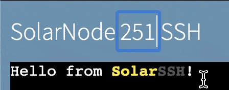

Remote Access¶
SolarSSH is SolarNetwork's method of connecting to SolarNode devices over the internet even when those devices are not directly reachable due to network firewalls or routing rules. It uses the Secure Shell Protocol (SSH) to ensure your connection is private and secure.
SolarSSH does not maintain permanently open SSH connections to SolarNode devices. Instead the connections are established on demand, when you need them. This allows you to connect to a SolarNode when you need to perform maintenance, but not require SolarNode maintain an open SSH connection to SolarSSH.
In order to use SolarSSH, you will need a User Security Token to use for authentication.
Browser Connection¶
You can use SolarSSH right in your browser to connect to any of your nodes.

The SolarSSH browser app
Choose your node ID¶
Click on the node ID in the page title to change what node you want to connect to.

Changing the SolarSSH node ID
Bookmark a SolarSSH page for your node ID
You can append a ?nodeId=X to the SolarSSH browser URL
https://go.solarnetwork.net/solarssh/, where X is a node ID, to make the app start with that
node ID directly. For example to start with node 123, you could bookmark the URL
https://go.solarnetwork.net/solarssh/?nodeId=123.
Provide your credentials¶
Fill in User Security Token credentials for authentication. The node ID you are connecting to must be owned by the same account as the security token.
Connect¶
Click the Connect button to initiate the SolarSSH connection process. You will be presented with a dialog form to provide your SolarNodeOS system account credentials. This is only necessary if you want to connect to the SolarNodeOS system command line. If you only need to access the SolarNode Setup App, you can click the Skip button to skip this step. Otherwise, click the Login button to log into the system command line.

SolarNodeOS system account credentials form
SolarSSH will then establish the connection to your node. If you provided SolarNodeOS system account credentials previously and clicked the Login button, you will end up with a system command prompt, like this:

SolarSSH logged-in system command prompt
Remote Setup App¶
Once connected, you can access the remote node's Setup App by clicking the Setup button in the top-right corner of the window. This will open a new browser tab for the Setup App.

Accessing the SolarNode Setup App through a SolarSSH web connection
Direct connection¶
SolarSSH also supports a "direct" connection mode, that allows you to connect using standard ssh
client applications. This is a more advanced (and flexible) way of connecting to
your nodes, and even allows you to access other network services on the same network as the node
and provides full SSH integration including port forwarding, scp, and sftp support.
Direct SolarSSH connections require using a SSH client that supports the SSH "jump" host
feature. The "jump" server hosted by SolarNetwork Foundation is available at
ssh.solarnetwork.net:9022.
The "jump" connection user is formed by combining a node ID with a user security token,
separated by a : character. The general form of a SolarSSH direct connection "jump" host thus
looks like this:
NODE:TOKEN@ssh.solarnetwork.net:9022
where NODE is a SolarNode ID and TOKEN is a SolarNetwork user security token.
The actual SolarNode user can be any OS user (typically solar) and the hostname can be anything.
A good practice for the hostname is to use one derived from the SolarNode ID, e.g. solarnode-123.
Using OpenSSH a complete connection command to log in as a solar user looks like this, passing
the "jump" host via a -J argument:
ssh -J 'NODE:TOKEN@ssh.solarnetwork.net:9022' solar@solarnode-NODE
Warning
SolarNetwork security tokens often contain characters that must be
escaped with a \ character for your shell to interpret them correctly. For example, a token
like 9gPa9S;Ux1X3kK)YN6&g might need to have the ;)& characters escaped like
9gPa9S\;Ux1X3kK\)YN6\&g.
You will be first prompted to enter a password, which must be the token secret. You might then be prompted for the SolarNode OS user's password. Here's an example screen shot:

Accessing the SolarNode system command line through a SolarSSH direct connection
Shell shortcut function¶
If you find yourself using SolarSSH connections frequently, a handy bash or zsh shell function
can help make the connection process easier to remember. Here's an example that give you a
solarssh command that accepts a SolarNode ID argument, followed by any optional SSH arguments:
function solarssh () {
local node_id="$1"
if [ -z "$node_id" ]; then
echo 'Must provide node ID , e.g. 123'
else
shift
echo "Enter SN token secret when first prompted for password. Enter node $node_id password second."
ssh -o StrictHostKeyChecking=no -o UserKnownHostsFile=/dev/null \
-o LogLevel=ERROR -o NumberOfPasswordPrompts=1 \
-J "$node_id"':SN_TOKEN_HERE@ssh.solarnetwork.net:9022' \
$@ solar@solarnode-$node_id
fi
}
Just replace SN_TOKEN_HERE with a user security token. After integrating this into your shell's
configuration (e.g. ~/.bashrc or ~/.zshrc) then you could connect to node 123 like:
solarssh 123
Warning
Be sure to leave the : character in front of your token in the -J argument. If your token
was ABC123DEF456 the line would look like this:
-J "$node_id"':ABC123DEF456@ssh.solarnetwork.net:9022' \
PuTTY¶
PuTTY is a popular tool for Windows that supports SolarSSH connections. To connect to a SolarNode using PuTTY, you must:
- Configure a SSH connection proxy to
ssh.solarnetwork.net:9022using a username likeNODE_ID:TOKEN_IDand the corresponding token secret as the password. - Optionally configure a tunnel to
localhost:8080to access the SolarNode Setup App - Configure the session to connect to
solarnode-NODE_IDon port22
PuTTY SSH proxy connection configuration¶
Open the Connection > Proxy configuration category in PuTTY, and configure the following settings:
| Setting | Value |
|---|---|
| Proxy type | SSH to proxy and use port forwarding |
| Proxy hostname | ssh.solarnetwork.net |
| Port | 9022 |
| Username | The desired node ID, followed by a :, followed by a user security token ID, that is: NODE_ID:TOKEN_ID |
| Password | The user security token secret. |

Confiruing PuTTY connection proxy settings
PuTTY SSH tunnel configuration¶
To access the SolarNode Setup App, you can configure PuTTY to foward a port on your local machine to
localhost:8080 on the node. Once the SSH connection is established, you can open a browser to
http://localhost:PORT to access the SolarNode Setup App. You can use any available local port, for
example if you used port 8888 then you would open a browser to http://localhost:8888 to access
the SolarNode Setup App.
Open the Connection > SSH > Tunnels configuration category in PuTTY, and configure the following settings:
| Setting | Value |
|---|---|
| Source port | A free port on your machine, for example 8888. |
| Destination | localhost:8080 |
| Add | You must click the Add button to add this tunnel. You can then add other tunnels as needed. |

Confiruing PuTTY connection SSH tunnel settings
PuTTY session configuration¶
Finally under the Session configuration category in PuTTY, configure the Host Name and Port to connect to SolarNode. You can also provide a session name and click the Save button to save all the settings you have configured, making it easy to load them in the future.
| Setting | Value |
|---|---|
| Host Name | Does not actually matter, but a name like solarnode-NODE_ID is helpful, where NODE_ID is the ID of the node you are connecting to. |
| Port | 22 |

Confiruing PuTTY session settings
PuTTY open connection¶
On the Session configuration category, click the Open button to establish the SolarSSH
connection. You might be prompted to confirm the identity of the ssh.solarnetwork.net server
first. Click the Accept button if this is the case.

PuTTY host verification alert
PuTTY will connect to SolarSSH and after a short while prompt you for the SolarNodeOS user you would
like to connect to SolarNode with. Typically you would use the solar account, so you would type
solar followed by Enter. You will then be prompted for that account's password, so type that
in and type Enter again. You will then be presented with the SolarNodeOS shell prompt.

PuTTY node login
Assuming you configured a SSH tunnel on port 8888 to localhost:8080, you can now open
http://localhost:8888 to access the SolarNode Setup App.

Once connected to SolarSSH, access the SolarNode Setup App in your browser.